Киіз үй жиһаздары мен бұйымдары
Киіз үй жиһаздары мен бұйымдары - үй тұрмысында қолданылатын жабдықтар, халық арасында олардың алуан түрлері бар. Кейбір түрлері қазіргі заманға дейін өз мәнін жоғалтқан жоқ.
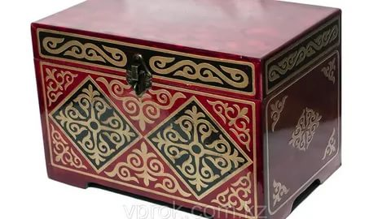
Әбдіре - киім-кешек немесе басқа да бағалы бұйымдарды сақтауға арналған сандық. Оның көлемі әр түрлі болады. Әбдірені мықты, әрі жеңіл ағаштан тегістеп-жонып тақтай дайындап, содан қиюластырып жасайды. Бір түсті сырмен боялып, алдыңғы беті сәнді болуы үшін түрлі өрнектермен әшекейленген жұқа қаңылтырмен қапталады. Қозғауға ыңғайлы болу үшін екі бүйіріне қос-қостан төрт тұтқа орнатылып, қақпағына құлып салынады.
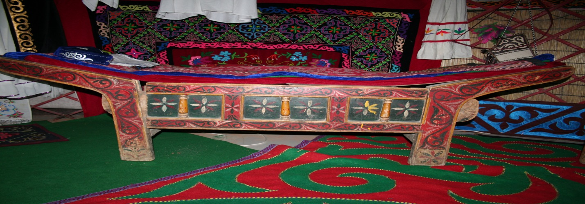
Ағаш төсек - адамның жатып тынығуы үшін пайданылатын үй жиһазы. Ағаш төсектің қазақ үлгісіндегі түрі - қайқыбас төсек. Ол негізгі үш бөліктен:
төсектің басынан (жоғары және төменгі);
қапталынан (алдыңғы және артқы);
шабағынан тұрады.
Төсекті кептірілген қатты ағаштың (қайың немесе емен) тегістеп, өңделген тақтайынан жасайды. Төсектің басы, аяқтары мен оған көлбей бекітілетін жастықша бөлігі қиюластырылып, біртұтас етіп дайындалады. Сәнді болу үшін оның бетін әр түрлі бояулармен өрнек салып сырлайды не өрнектелген бұйыммен әшекейлейді.
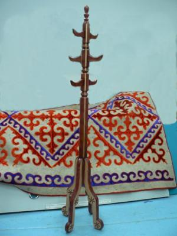
Адалбақан - киім т.б. үй мүліктерін ілуге арналған жабдық. Адалбақан көбінесе бұтағы көп балапан қайың мен шыршадан (самырсыннан) жасалады. Жас ағашты кесіп алып қабығын аршығаннан кейін, оның бұтақтарын түп жағынан бір сүйемдей қалдырып, ұшын кесіп тастайды. Енді сол бұтақ түбірлерін бақанның жоғарғы ұшының бағытымен майыстырып иеді де, ұштарын қайыспен не мықты жіппен бақанның дініне таңып, көлеңкеде кептіреді. Иілген бұтақтар жазылып кетпейтіндей болып әбден кеуіп қалыптасқан кезде таңғышты шешіп алып, оның ұштарын үшкірлеп жонып ілгек жасайды.Сәнді болу үшін, оның сыртын бояулармен өрнектеп сырлайды, бүршікбас алтын, күміс шегелермен нақыштайды.
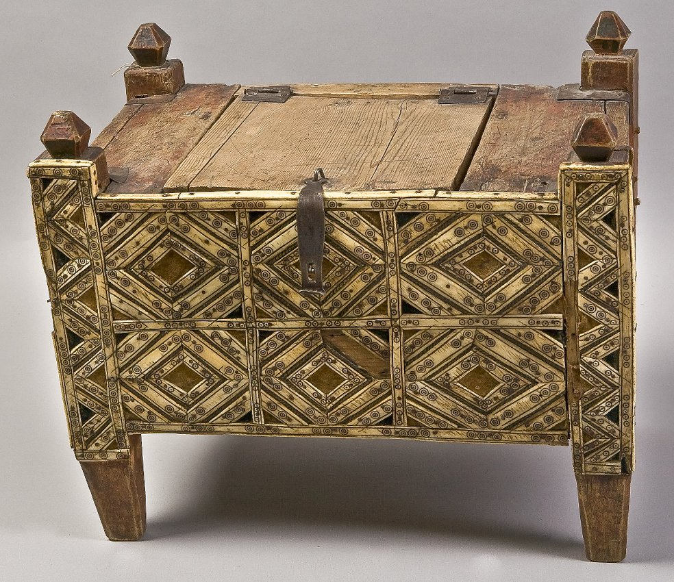
Кебеже - тамақ сақтауға арналған сандыққа ұқсас ағаш бұйым. Кебеженің түбі қалың тақтайдан жасалады. Оның қақпағы сандықтың қақпағы сияқты, кейде жармалы да болып келеді. Жармалар не көлденең кергіш ағашпен, не таспамен жалғастырылады. Кебеженің беті де кейде сырмен, кейде сүйекпен ою салып өрнектеледі.
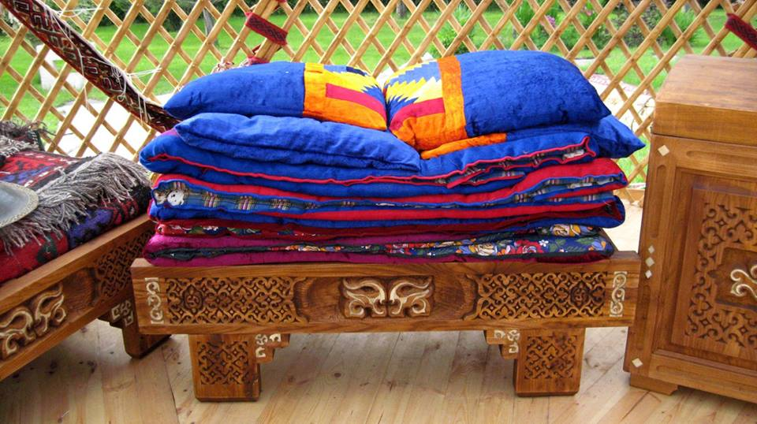
Жастықағаш - жер төсекте жатқан адамның басын биіктету үшін жастықтың астына қоюға ыңғайлап жасалған тиянақ ағаш. Жастықағаш - кәдімгі ағаш төсектің сыңар басы (жоғарғы басы). Оның екі аяғы, жастықты жерге түсірмей тұратын тақтай кермесі және жастықтың астына қоюға лайықтап жасалған көлбеу тақтай төсеніші болады. Жастықағаш тұтас, ағаш төсекке қарағанда әрі ықшамды, әрі жеңіл болғандықтан, көшпелі тұрмыста көп пайдаланылған.
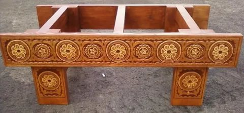
Жүкаяқ - жиған жүктің астына қоюға арналған ағаш тұғыр. Жүкаяқ кепкен, мықты әрі жеңіл ағаштан, өңделген, тегіс тақтайдан жасалады. Ол негізгі уш бөліктен: жанағаштан (алдыңғы және артқы беттер), аяқтан, шабақтан тұрады. Жүкаяқтың пішіні екі түрлі болады:
үсті тегіс жүкаяқ,
қайқыбас жүкаяқ.
Қайқыбас жүкаяқ кәдімгі қайқыбас төсекке ұқсайды. Жүкаяқтың алдыңғы беті бір түсті сырмен боялып, оған кейде түрлі-түсті бояулармен өрнек салады не өрнек салған сүйекпен қаптап әшекейлейді.
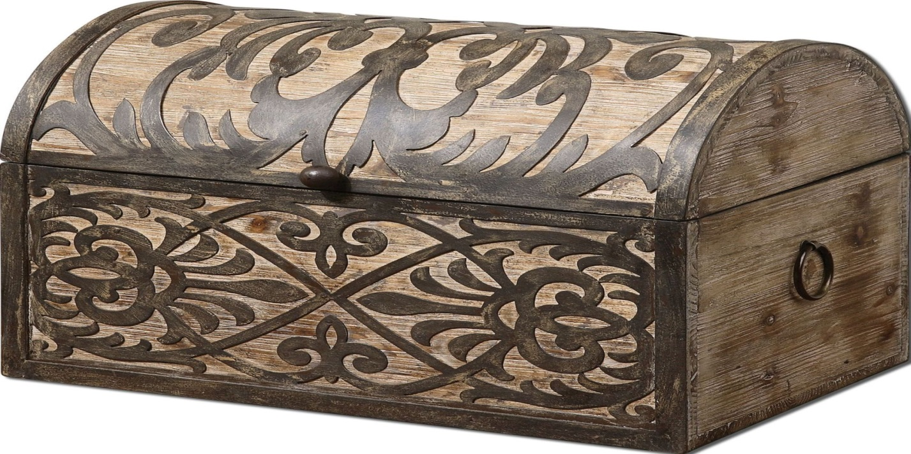
Сандық - киім-кешек, тағы басқа да заттарды салуға арналған, ағаштан жасалған бұйым.
Сандық - киім-кешек, тағы басқа да заттарды салуға арналған, ағаштан жасалған бұйым. Сандық - халықтар тұрмысында ерте кезден пайдаланылып келе жатқан ең ежелгі жиһаздың бірі. Көшпенді халық үшін ол өте-мөте қолайлы болған. Сандықтың аузына көбінесе ішкі құлып, кейде аспа құлып орнатылады. Сандықты жерге қойғанда түбі дым тартпау үшін, оның астыңғы төрт бұрышымен үйлестіре тақтайдан бұрыштап аяқ орнатады. Сандықтың беті әр түрлі бояумен сырланып, не өрнектеледі не айшықты қаңылтырмен, кейде өрнекті сүйекпен қапталады. Сандықтың екі бұйіріне тұтқа орнатылады.
Сандыққап - сандықты бүлінуден сақтау үшін сыртына кигізетін киіз қап. Киізді сандыққа өлшеп пішіп, сандықтың қақпағына тура келетін бетінен сандық сиярлықтай ауыз қалдырады да, қалған қосындыларын шуда жіппен тепшіп тігеді. Жүкке жиналған сандық қап кигізілген кезде де сәнді көріну үшін сандыққаптың алдыңғы бетіне кесте тігіледі, түсті асыл мата тұтылады. Сандыққаптың сандық тұтқасына дәл келетін тұсы өлшеніп тесіліп, тұтқалар сыртқа шығарылып қойылады. Бұл сандықты қабымен көтеруге қолайлы болады. Сандыққаптың аузы матадан ызылған баулар немесе түйме арқылы жабылады.
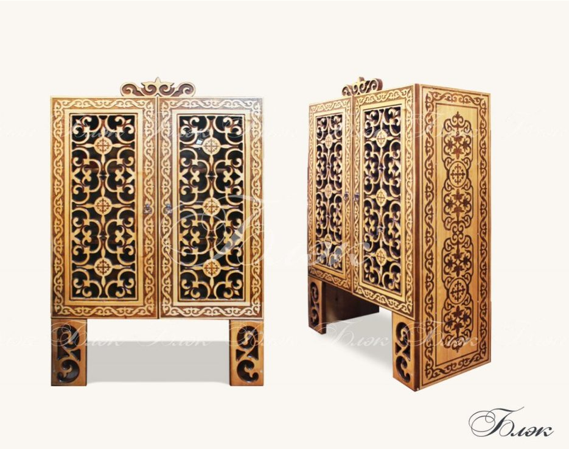
Асадал - тамақ пен ыдыс-аяқ сақтауға арналған кебеже тектес ыдыс. Асадал мықты әрі жеңіл ағаштан жасалады. Асадалдың түбі оның ішкі жағындағы жиекшелерге тірей орнатылатын қалың тақтаймен, үстіңгі беті жұқалау тақтаймен жабылады. Алдыңғы бетінде топсамен бекітілген бір кейде екі жармалы есігі және суырмасы болады. Асадал сәнді болу үшін оның бетін әр түрлі бояулармен өрнектеп сырлайды не сүйекпен өрнектеп әшекейлейді. Асадалдың үйдегі орны - қазан-аяқ (сол жақ) жақ.
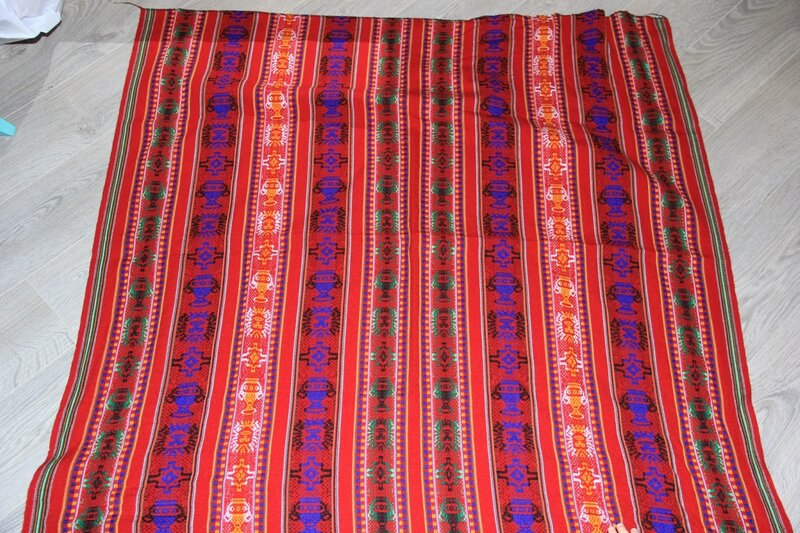
Алаша - әр түрлі жүннен немесе әр түрлі түске боялған мақта мен жүннен тоқылған төсеніш. Оны екі түрлі әдіспен: түрлі -түсті жіптерді жарыстыра жолақ жасап, әр түстерін, көп мәнерлі өрнектер түсіріп тоқиды. Алғашқысын жолақ алаша, соңғысын терме алаша деп, кейде кілем алаша деп те атайды. Алаша енсіз тоқылғандықтан төсеніш, тұс кілем, қоржындар жасағанда бірнеше ендерді біріктіріп тігеді.
Терме алаша тоқығанда оны геометриялық және көкөріс өрнекпен безендіреді. Мұндай алашаны "терме" деп атайды, оны тоқығанда "ілмек", "өткерме", "мәймөңке" деп аталатын құралдар пайдаланады. Алашаны Қазақстанның әр облысында жергілікті дәстүрге сай, әр түрлі етіп тоқиды. "Орама теру" тәсілдерімен баулар, алашалар, ал, өрмектің арқауы бір түсті жіптен тоқылады. Бұған көбінесе ақ не қызыл түсті жіптер пайдаланылады. Тоқу барысында әр түсті жіптерден өрнек салып, оның жібі өрмектің ерсісіне қолмен оралып, арқаумен бекітіледі. Бір түсті теру мәнерімен тек басқұрды тоқиды.
Тақыр алаша тоқу немесе тақыр кілем тоқу әсіресе Қызылорда облысында дамыған. Оны жіптерді бояп алады да, жай өрмек әдісімен тоқиды. Бұл кілемді кейде ақ жіп пен қара жіпті қосып тоқиды. Тақыр алаша тоқу әдісінде жиі пайдаланатын өрнектердің түрлері: жіліншік, омыртқа, кеңірдек, көлденең жолақ кейде ұзын жолақтар.
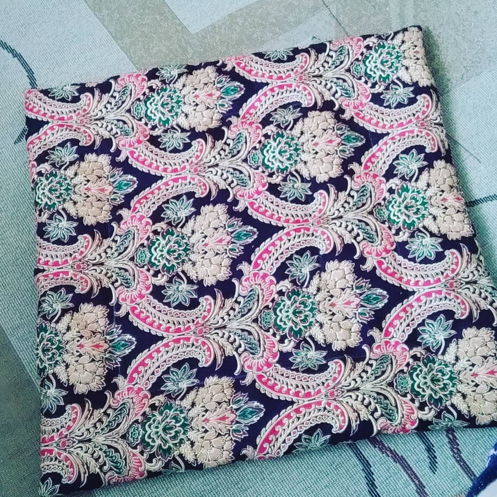
Бөстек - адамдардың астына төсеуге арналған жұмсақ төсеніш. Ол малдың (көбінесе ешкінің) неаңның иленген жұмсақ терісіне киізден астар салып жасалады.
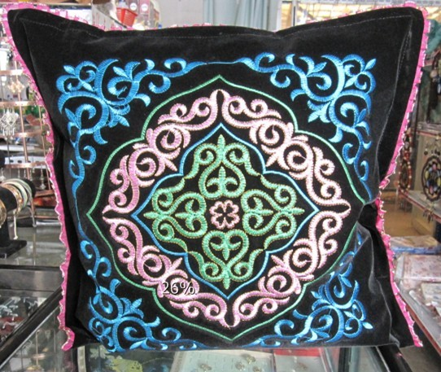
Жастық - адамның басына жастауға арналған үй жиһазы. Жастықтың ішіне көбінесе құстың мамығы салынып, сырты матамен тысталады. Оны "бидай шүберек" деп атайды. Бидай шүберектің сырты әр түрлі асыл маталармен қапталады. Оны "жастық тыс" деп атайды. Жастық тысын шешіп ауыстырып отыруға қолайлы болу үшін, кигізетін аузына түйме қадалады, не бау тағылады. Құстың мамығынан жасалған жастықты "құс жастық" дейді. Жастық көбінде бір кісілік болады. Ал оның салт атқа мінгенде ер үстіне салатын түрін "көпшік" деп атайды.
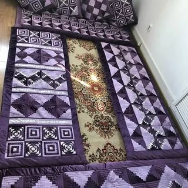
Көрпе - матаның арасына мақта немесе жүн (әсіресе түйенің) салып тіккен жамылғы әрі төсеніш. Ол жамылғы көрпе және төсек (төсеніш) көрпе болып бөлінеді. Көрпенің астары жай ғана матадан, тысы асыл матадан тігіледі. Жамылуға арналған көрпе бір кісілік, екі кісілік болады. Төсек көрпенің сыртқы астарын маталардың қиықтарынан құрап тіксе, оны "құрақ көрпе" дейді. Жамылғы көрпенің ұзындығы кісінің бойына лайық етіп жасалады. Баланың бесігіне жабатын көрпені "бесік көрпе", бала орауға арналған көрпені "орауыш көрпе" дейді.
Құстөсек - құс жүнінен (мамығынан) жасалған жұмсақ төсеніш. Құстөсектің үлкендігі оны төсейтін төсектің үлкен-кішілігіне қарай әр түрлі болады. Қалың матадан ұзындығы мен ені төсекпен бірдей етіп үлкен қанар тігеді де, оның ішіне құстың жүнін толтырады. Құстөсектің сыртын тағы бір асыл матамен тыстайды. Құстөсектің ішіндегі мамық адамның терімен дымқыл тартып, ұйысып қала береді. Сондықтан оны апта сайын қағып-сілкіп, мамықтың ұйысқанын жазып, күн көзіне қойып, желге қақтырып алып отырады. Құстөсек тек жұмсақтығымен ғана емес жылу сақтағышымен де құнды.

Сырмақ - киізден сырып, оюлап жасалған төсеніш
Сырмақ - киізден сырып, оюлап жасалған төсеніш. Сырмақты түрлі-түсті киізден ойып, өрнек салып та, сондай-ақ шымқай ақ киіздің бетіне ақ, қызыл, сары маталардан ою бастырып та тігеді. Сырмақ жасау үшін алдымен ою-өрнек салынған үлгісі дайындалады. Мұндай үлгілерді жасауға қалың қағаз картон, жұқа пластмассалар дайындалады, пластмассадан жасалған үлгілерді бірнеше рет пайдалануға болады.
Сырмаққа керекті ақ, қара киіздер бөлек-бөлек дайындалады, сондай-ақ, олар жұқа, әрі тығыз басылуы керек. Киіз басылып біткен соң, ақ мен қара түрлерін бір-біріне беттестіріп, үстіне алды ала дайындалған ою-өрнектері салып айналасын қарындашпен сызып, суреттің ізін түсіреді. Түсірілген із бойымен екі киізді бірден ойып шығады да, ақ киіздің ойылған оюын қараға, қарасын ақ киізге салып қиюластырып тігеді. Құрастырылған екі түсті киіздің оюын сол қалпымен тұтас үлкен киіздің үстіне салып жапсырады. Оюлардың құрастырылар жерінің үстін бастыра жиектейді. Біріншіден жіптің бояуы ақ, қара киіздің түсінен басқа ашық түсті болады, сонымен қатар жиек бірнеше жіптерден қабаталып иіріледі. Үй тұрмысында сырмақ, текеметтей емес, тұтынуғы мықты, төзімді болады. Сырмақтың оюларын құрастырып, үстінен басып тігіп болғаннан кейін, ақ киіздің үстін ақ жіппен, қара киізді қара жіппен жөрмеп тігеді. Осы әдіспен тігілген сырмақ шымыр, қатты болады.
Сырмақ жасау өнерінде "қошқар мүйіз" ою-өрнегі көп қолданылады, олар өте дәлдікпен орналасып, бір-бірімен жалғасып ұласып жатады. Қазақстанда жиі кездесетін сырмақтарда үш-төрт ою бірігеді де, бір квадрат немесе ромбы құрайды.Бірақ та "қошқар мүйізден" басқа өрнектер пайдаланылмайды деп кесіп айтуға болмайды, мысалы, Павлодар облысында жасалған сырмақтардың бетіндегі ою-өрнектерде әр түрлі гүлдердің бейнесі көп кездеседі.
Сырып тігудің екі түрі болады:
жеке жіптің өзімен әрлі-берлі тік шаншып тігу
қос жіппен сырып тігу - инедегі жіптің асынан тағы бір жіпті бос төсей отырып сырып тігеді, тігістің бұл түрі іс машинаның тігісіне ұқсайды. Сырмақты сыру үнемі ою-өрнектердің бағытымен жүргізіледі, бұдан кейін сырмақтың шеттерін тегістеп қиып, шетіне айналдыра жиек бастырады. Сырмақтың жиегін бастыратын жіпті ақ жүннен иіреді. Жиекке арналған жіпті жалаң қабат түрінде біреуін оңқай, екіншісін солақай етіп иіреді, содан кейін оларды өзді-өзіне қосады да, екі қабаттап, екі бөлек етіп тағы иіріп, бояуға салу үшін төгеді де, жарты метр шамасындай етіп келептейді. Жиек жіптерді қазанға салып, суға ерітілген бояумен бірге аударыстыра отырып қайнатады, жіптердің қылшықтары бүріліп, сыптырылғанда жіптің бояуы қанды деуге болады. Халық арасында жіпке бояу жақсы сіңуі, бояудың түр-түстері ашық болу үшін, бояу мен суға ашудас, мүсәтір, тұз қосып, аздап май салып бояған. Бояу сіңіп, қайнап боялған жіпті сол келептеулі қалпында сөреге іліп, сағат сайын аудастырып кептіреді. Әбден кеуіп болған жиек жіптерді оңқай және солақайын бір-біріне қатар жарыстыра отырып, оны ширатпай-ақ домалақтап орайды. Сонда жиектің қатар түскен ширатындысындағы оңқай иірім мен солақай иірім қарсыласа келіп, біркелкі таңдай өрнегін жасайды.
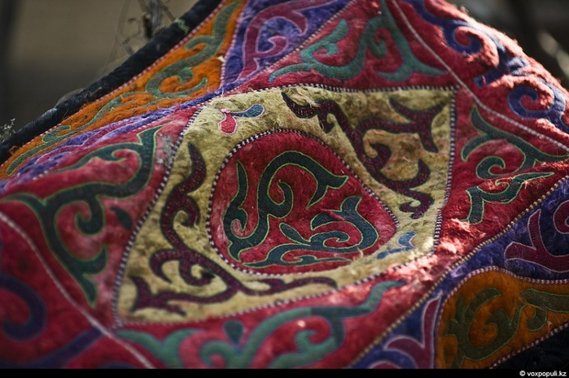
Текемет - бетіне түрлі-түсті ою-өрнек басылған киіз. Оның күзем жүннен басылған талдырма бетіне ақтай немесе қызылға, көкке, қараға не басқа түске боялған жүнді әр түрлі өрнекпен тартады. Текемет басылатын жүнді де киіз басылатын жүн сияқты көпсітеді. Текеметті де киіз басқандай әдіспен басады. Алғашқы жартылай басылған түрі "талдырма" деп аталады. Бұл әлі толық басылып, қатаймаған кезі. Оны оюлы түр салуға негіз ретінде кептіріп, құрғатып дайындайды. Текемет мықты болуы үшін жартылай басылған екі киізді беттестіріп білектейді. Ою-өрнек негізгі талдырмаға салынады. Текеметтің бірнеше түрі болады. Олардың ішінде шашақты текеметті қымбат маталармен безендіріп жасайды. Мұндай текеметті халық жоғары бағалаған.